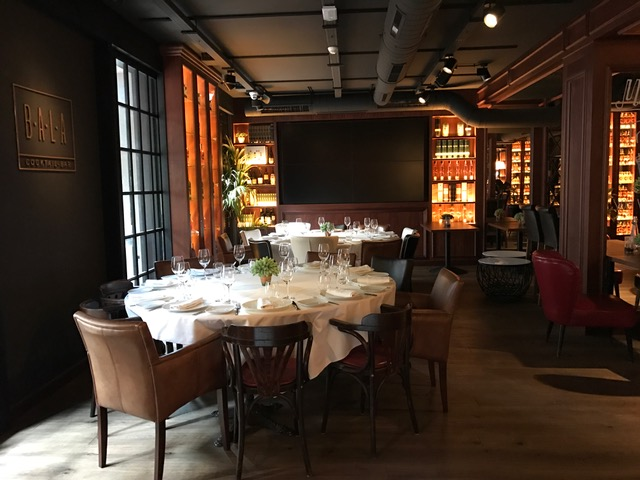
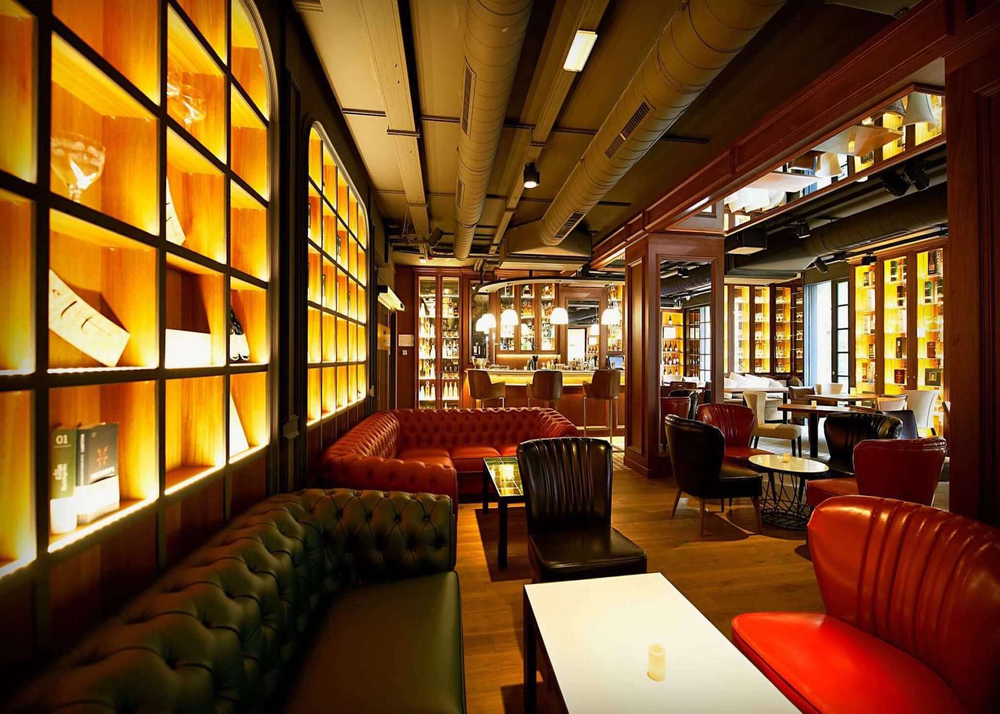
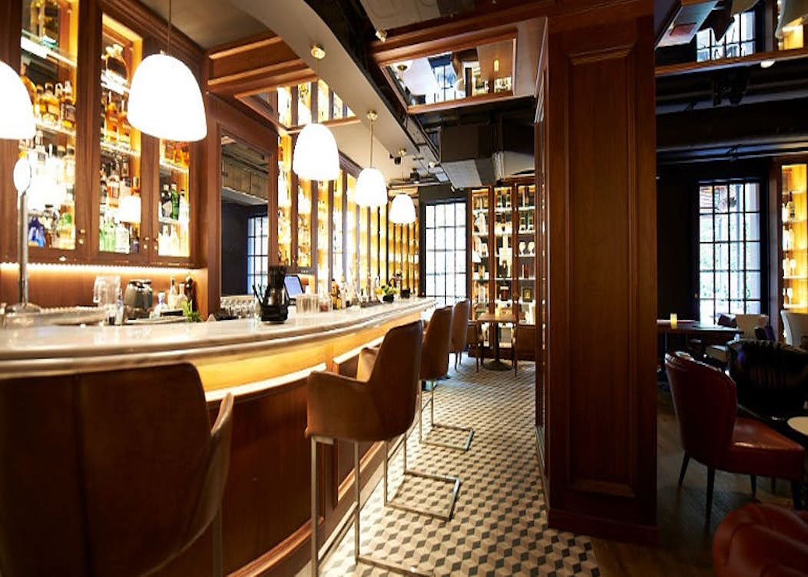

Barcelona Proposal - May 14th to 16th, 2020
Better travel
2020-01-10
ACCOMMODATION
May is already high season, the weather is good and there is not a lot of people so, we must say that May is maybe the best time of the year to visit the city.
We are happy to tell you that we have found a very good hotel at very good rates.
The SB Glow, is a 3 years old hotel, it is new and modern. It is located near to the Agbar Tower just a few minutes from the city centre and just next to Les Glories Mall, one of the bigger malls is the city.
Its terrace has wonderful city views
Alternative Hotel
As a second option we are offering Catalonia Plaza catalunya, it is a very good hotel located just in heart of the city.
The hotel is located in a modernist building, an old small palace but the rooms are modern and very comfortable.
Map
PROGRAMME
May 14th
At 14.05h the plane will arrive in Barcelona’s Airport, where a person from our staff will welcome guests and scort them to the bus.
Guests will be transferred to the hotel to let the luggage and do the checkin.
Once all the guests will be ready, the bus will transfer them to the Olympic Port where a catamaran will be waiting for them.
Catamaran Sailing Activity
Guests will enjoy barcelona skyline while sailing. Catamaan will sail along Barcelona coastline during the afternoon, so they will relax for some hours skipping all the bad vibes! The boat features sound system, bar, sunbathing areas and bathrooms. Non alcoholic drinks are included, but you have the option to upgrade to a open bar. with beer and sangría (the alcoholic drinks will be served after the bath time)
- Location Barcelona
- Duration 2 hours
- Capacity 80 pax
- Included Boat renting, staff, non alcoholic drinks, snacks (chips and olives) insurance.
Catamaran will be in exclusive for the group


After the activity free time till dinner time
Dinner Options
Before dinner we suggest to ask guests to meet at the hotel roof-top terrace and offer them a welcome drink. Once everyone will be ready our bus will transfer them to the chose restaurant.
Casa Carmen
We suggest for this first evening to have dinner at Casa Carmen because it is a very nice restaurant located just 5 minutes walking from Plaza catalunya, so, it is the perfect location for the guests will like to have a walk and have some drinks in the city centre.
Mirabé
But, if you prefer for the first evening a restaurant with the best city views we would suggest Mirabé. It is located on the Tibidabo hill and if the night is clear you can see the whole city and the sea.
May 15th
After breakfast, guests will go to a professional visit.
Once finished we suggest to do a Segway tour until lunch time.
Segway tour
The tour will start at Arc del Triomf and from there guests will go to the sea front promenade through La Barceloneta neighborhood. The tour will end near the Olympic Vell where guests will enjoy a Mediterranean lunch.
- Location Barcelona
- Duration 2 hours
- Capacity 50 pax
- Included Segway renting, english speaking guide, insurance.


Mediterranean lunch
For lunch we suggest a very nice restaurant located at the Old harbour. Guests will be seated at the terrace enjoying the sun and the beautiful views.
After lunch, guests will have free time, the ones who will like to go to the hotel will be transferred by bus.
Dinner and party options
Alba Granados - Cocktail Bar Bala
The restaurant Alba Granados y located at the Eixample. It is a very elegant restaurant and it is divided into two floors. The ground floor is the main restaurant and into the first floor it is located the Cocktail Bar Bala.
This space has a capacity for 55 pax and our group will have it in exclusive, they will enjoy a seated dinner first and then a party with DJ and drinks.
They offer mediterranean high quality food.



Philippines Club
Elegant and bright with the best views of Plaça Reial, this is the exclusive Philippines Club.
In an unbeatable location on the second storey of one of the emblematic buildings on Plaça Reial, with direct, privileged views of this marvellous square, the light in this space will envelop you from the very first instant.
It is located in the first floor with views to the square.it has capacity for 80 people and it is divided into two rooms, the bigger one has a capacity for 60 pax.
Our guests will enjoy a seated dinner followed by a private party with DJ.


After the party, guests will be transferred to the hotel.
On May 16th they will be picked up at 5.00h to go to the Airport.
TERMS AND CONDITIONS
Rates valid for 2020
For a group of minimum 40 pax.
VAT included.
No reservation has been done. Availability upon request.